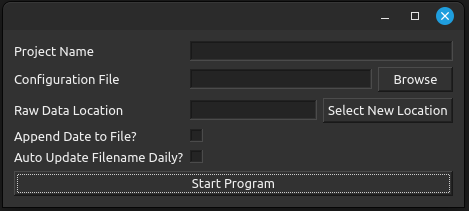

Configuration and Data Files
Configuration Window
When the program is first started, a configuration window will appear. This window allows you to define the setting of the program before starting.

- Here you can select the following:
The name of the project. (This is for your own reference and will not be used by the program, it will be stored in the config file)
- The config file to load.
If you have a config file that you would like to load, select it here. The program will ask if you are okay overwriting the file. This is because if you make changes in the program, this file will be updated.
If you would like to create a new config file, you can type a new name in the file-select window and a new config file will be created.
- The data file to load.
NOTE: Only select the data file after you have selected the config file and you would like to change it. The program will automatically populate this field when you select a config file.
Auto Update: If this is checked, the program will automatically append the current date to the data file name. This results in a new data file being created for every day the program is running.
Append Date: If this is checked, the program will automatically append the current date to the file. If ‘auto-update’ is not checked, the data-file will only be created when the program starts.
NOTE: The program always appends new data to the end of datafiles, so you don’t need to worry about a data file being overwritten with new data.
{kind=link}
Config Files
Configuration files are json dictionaries containing the relevent information for the program to restore previous sessions. A config file will save the following information:
Project Name
Channels in the active and deactive channel list along with any instruments associated with them.
Plots that were open in the MDI subwindow.
Data file location and settings.
An example of a config file looks like the following:
{ "Title": "Default Configuration", "ActiveChannels": [ { "Name": "Channel 1", "Type": "InstrumentChannel", "paused": "True", "timerSetting": 1000, "Instrument": { "address": "GPIB0::1::INSTR", "parameters": { "Measurement Type": "4 Wire Resistance", "Sample Count": "1", "TC Type": "K" } } } ], "DeactiveChannels": [], "Plots": [ { "Name": "TestPlot", "Type": "PlotDisplayWidget", "Inputs": [ "Channel 1" ] } ], "DataLog": { "Location": "Configurations/data.txt", "Format": "wide", "AppendDate": "True", "AutoUpdate": "True" } }Ideally, you should never need to alter these files as the program will save the state in this format for you. However, when the program has trouble starting, the config file is the first place to look for errors.